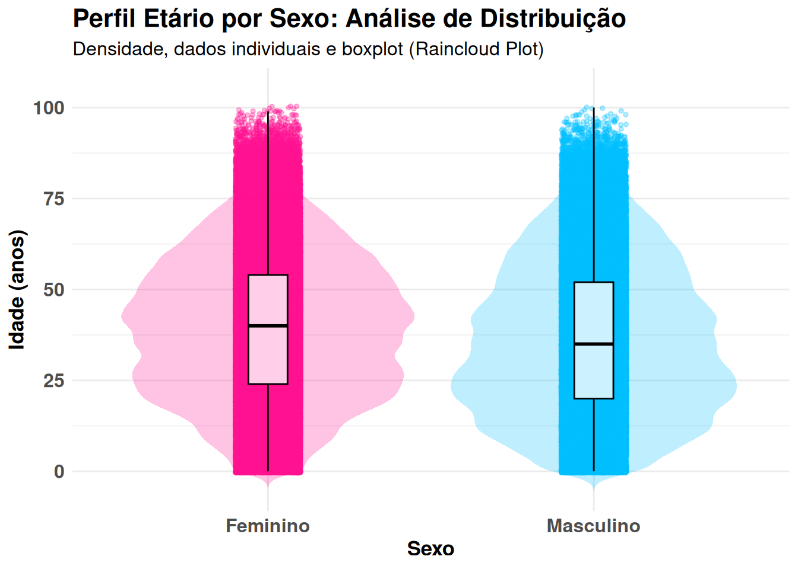

#---Vamos carregar o banco previamente limpo e salvo que contém 16 variáveis:
#---Carregar o arquivo
load("chikungunya_2024.RData")Relatório final para o curso Ciência de Dados II
Contextualização
Optou-se por trabalhar com uma base de dados pública, que já foi explorada e limpa na disciplina anterior, para isso utilizamos o projeto já criado para esse fim. O script foi construído com base nos conceitos apresentados em aula e, em alguns momentos, contou com o apoio de ferramentas de inteligência artificial (chatGPT).
Descrição dos dados
O banco de dados CHIKBR24.dbc reúne os registros nacionais de casos notificados de febre de Chikungunya no Brasil durante o ano de 2024, provenientes do Sistema de Informação de Agravos de Notificação (SINAN), disponibilizado pelo DATASUS, Ministério da Saúde. Os dados são de domínio público, o banco contém informações sobre as notificações de casos suspeitos, incluindo variáveis sociodemográficas, variáveis clínicas e epidemiológicas. O banco atual conta com as seguintes variáveis: UF, estados, macrorregiões, data de notificação, semana de notificação, data do diagnóstico, classificação, critério diagnóstico, apresentação clínica, idade, sexo, raça/cor, escolaridade, hospitalização e evolução da doença.
1ª etapa: Importação de dados
2ª etapa: Gráfico avançado
library(ggplot2)
library(dplyr)
Attaching package: 'dplyr'The following objects are masked from 'package:stats':
filter, lagThe following objects are masked from 'package:base':
intersect, setdiff, setequal, union# 1. dados demográficos
dados_adv <- chikungunya_2024 %>%
filter(
!SEXO %in% c("Ignorado", "Não Informado"),
!is.na(SEXO),
!is.na(IDADE),
IDADE >= 0,
IDADE <= 110
) %>%
mutate(
SEXO = factor(SEXO, levels = c("Feminino", "Masculino"))
)
# 2. Construção do Gráfico de Nuvem de Chuva
ggplot(dados_adv, aes(x = SEXO, y = IDADE, fill = SEXO)) +
# Camada 1: Distribuição de Densidade
geom_violin(trim = FALSE, alpha = 0.25, color = NA) +
# Camada 2: Dados Individuais (menos sobreposição)
geom_jitter(
aes(color = SEXO),
width = 0.10,
alpha = 0.3,
size = 1
) +
# Camada 3: Boxplot mais visível
geom_boxplot(
width = 0.12,
fill = "white",
alpha = 0.8,
color = "black",
outlier.shape = NA
) +
# Cores padronizadas
scale_fill_manual(values = c(
"Feminino" = "#FF1493",
"Masculino" = "#00BFFF"
)) +
scale_color_manual(values = c(
"Feminino" = "#FF1493",
"Masculino" = "#00BFFF"
)) +
# Tema
theme_minimal() +
theme(
legend.position = "none",
axis.text = element_text(face = "bold", size = 12),
axis.title = element_text(face = "bold", size = 13),
plot.title = element_text(face = "bold", size = 16),
plot.subtitle = element_text(size = 12)
) +
# Rótulos
labs(
title = "Perfil Etário por Sexo: Análise de Distribuição",
subtitle = "Densidade, dados individuais e boxplot (Raincloud Plot)",
x = "Sexo",
y = "Idade (anos)"
)
O gráfico do tipo raincloud plot (gráfico de nuvem de chuva) integra diferentes representações visuais em um único painel, permitindo uma avaliação mais completa da distribuição dos dados. Esse tipo de gráfico combina três elementos principais: a densidade de distribuição (representada pelo formato de violino), os dados individuais (pontos dispersos) e o resumo estatístico (boxplot). A camada de densidade possibilita identificar as faixas etárias com maior concentração de casos, evidenciando a forma da distribuição (simetria, assimetria ou multimodalidade). Os pontos individuais representam cada observação do conjunto de dados, permitindo visualizar a dispersão real das idades e possíveis agrupamentos. Já o boxplot fornece uma síntese estatística, destacando a mediana, os quartis e a amplitude dos dados, o que facilita a comparação entre os grupos analisados.
3ª etapa: Gráfico Interativo
#--- Agora vamos criar uma gráfico interativo dos casos de Chikungunha, segundo sexo, no ano de 2024.
library(tidyr)
#install.packages("xts")
#install.packages("dygraphs")
library(xts)Loading required package: zoo
Attaching package: 'zoo'The following objects are masked from 'package:base':
as.Date, as.Date.numeric
######################### Warning from 'xts' package ##########################
# #
# The dplyr lag() function breaks how base R's lag() function is supposed to #
# work, which breaks lag(my_xts). Calls to lag(my_xts) that you type or #
# source() into this session won't work correctly. #
# #
# Use stats::lag() to make sure you're not using dplyr::lag(), or you can add #
# conflictRules('dplyr', exclude = 'lag') to your .Rprofile to stop #
# dplyr from breaking base R's lag() function. #
# #
# Code in packages is not affected. It's protected by R's namespace mechanism #
# Set `options(xts.warn_dplyr_breaks_lag = FALSE)` to suppress this warning. #
# #
###############################################################################
Attaching package: 'xts'The following objects are masked from 'package:dplyr':
first, lastlibrary(dygraphs)
library(htmlwidgets)
#caso não tenha um pacote instalado, instalar!!!
serie <- chikungunya_2024 %>%
count(SEMANA_NOTIFIC, SEXO) %>%
pivot_wider(names_from = SEXO,
values_from = n,
values_fill = 0)
datas <- seq.Date(
from = as.Date("2024-01-01"),
by = "week",
length.out = nrow(serie)
)
x <- xts(
serie[, c("Feminino", "Masculino")],
order.by = datas
)
dygraph(x, main = "Casos semanais de Chikungunya por sexo no Brasil, 2024") %>%
dySeries("Feminino", label = "Feminino", color = "#FF69B4") %>%
dySeries("Masculino", label = "Masculino", color = "#2166AC") %>%
dyOptions(stackedGraph = TRUE, fillGraph = TRUE, fillAlpha = 0.3) %>%
dyAxis("x", axisLabelFormatter = JS(
"function(d) {
var m = new Date(d).toLocaleString('pt-BR', { month: 'short' });
return m.charAt(0).toUpperCase() + m.slice(1);
}"
)) %>%
dyRangeSelector(height = 20)O gráfico apresenta o número de casos por semana de chikungunya no Brasil em 2024, segundo sexo. Observa-se aumento expressivo no início do ano, com pico entre as primeiras semanas epidemiológicas, seguido de declínio progressivo ao longo dos meses. Em todo o período, a ocorrência de casos foi maior no sexo feminino em comparação ao masculino.
4ª etapa: Criação de Mapa de Taxa de Incidência de Chikungunya por Estado – Brasil, 2024
# Vamos carregar os pacotes que iremos utilizar para criar o mapa
library(leaflet)
library(dplyr)
library(geobr)
library(sf)
library(htmltools)
# 1. Casos por UF
casos_uf <- chikungunya_2024 %>%
count(UF)
# População (IBGE aproximada)
pop <- tibble::tibble(
abbrev_state = c("AC","AL","AP","AM","BA","CE","DF","ES","GO",
"MA","MT","MS","MG","PA","PB","PR","PE","PI",
"RJ","RN","RS","RO","RR","SC","SP","SE","TO"),
population = c(
830000, 3300000, 900000, 4000000, 15000000, 9000000, 3000000,
4100000, 7000000, 7000000, 3600000, 2800000, 21000000,
8700000, 4000000, 11500000, 9600000, 3300000,
17000000, 3500000, 11000000, 1800000, 650000, 7500000,
46000000, 2300000, 1600000
)
)
# Mapa do Brasil
mapa_br <- read_state(year = 2020)
# Juntando os dados
dados_mapa <- mapa_br %>%
left_join(casos_uf, by = c("abbrev_state" = "UF")) %>%
left_join(pop, by = "abbrev_state")
# substituir NA
dados_mapa$n[is.na(dados_mapa$n)] <- 0
# Calculando a taxa
dados_mapa <- dados_mapa %>%
mutate(incidencia = (n / population) * 100000)
# 6. Corrigindo a projeção
dados_mapa <- st_transform(dados_mapa, 4326)
#
dados_mapa <- st_simplify(dados_mapa, dTolerance = 0.05)
# paleta por quantis - para legenda
pal <- colorQuantile(
"YlOrRd",
domain = dados_mapa$incidencia,
n = 5
)
# criando o mapa
mapa <- leaflet(dados_mapa) %>%
addProviderTiles(providers$CartoDB.Positron) %>%
addPolygons(
fillColor = ~pal(incidencia),
weight = 1,
color = "white",
fillOpacity = 0.9,
popup = ~paste0(
"<b>Estado: </b>", name_state, " (", abbrev_state, ")<br>",
"<b>Casos: </b>", format(n, big.mark = ".", decimal.mark = ","), "<br>",
"<b>Incidência: </b>", round(incidencia, 1), " por 100 mil"
)
) %>%
addLegend(
pal = pal,
values = ~incidencia,
opacity = 0.8,
title = "Incidência (casos/100 mil hab)",
position = "bottomright",
labFormat = function(type, cuts, p) { # função personalizada
paste0(format(round(cuts, 0), big.mark = ".", decimal.mark = ","))
}
) %>%
addLabelOnlyMarkers(
data = dados_mapa %>% st_centroid(),
label = ~abbrev_state,
labelOptions = labelOptions(noHide = TRUE, textOnly = TRUE, direction = "center")
)
# para vermos
mapaO mapa evidencia a distribuição da incidência de chikungunya no Brasil em 2024, mostrando diferenças marcantes entre os estados. As cores mais claras indicam locais com baixa taxa proporcional de casos, enquanto os tons mais intensos revelam estados onde a doença se espalhou de forma mais significativa em relação ao tamanho da população.